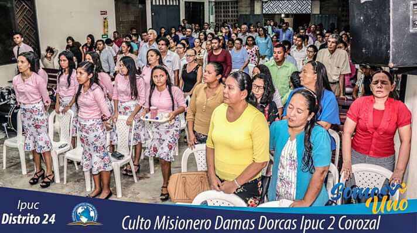
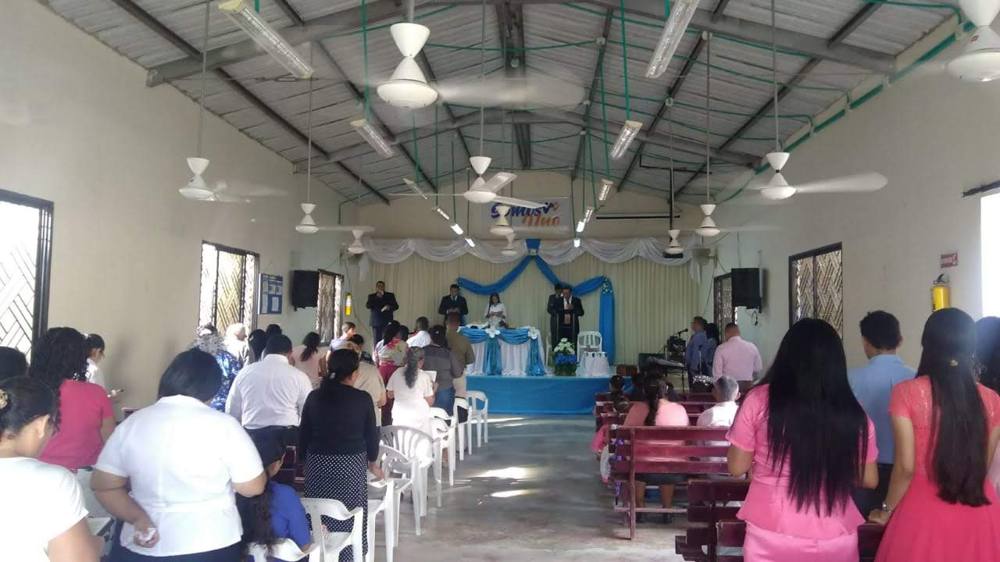
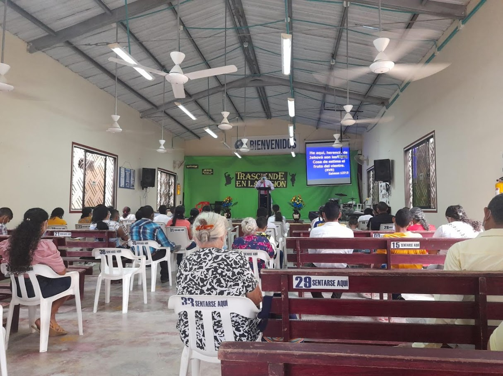

Segunda congregación
Somos una iglesia fundamentada en los principios bíblicos, dedicada
a proclamar el mensaje de salvación y a extender el amor de Dios a
todas las naciones.
Nos enfocamos en la evangelización, brindando
enseñanzas basadas en la Biblia para que más personas puedan conocer
la verdad y experimentar una transformación en sus vidas.

"Te encarezco delante de Dios y del Señor Jesucristo,
que juzgará a los vivos y a los muertos en su manifestación y en su
reino, que prediques la palabra; que instes a tiempo y fuera de
tiempo; redarguye, reprende, exhorta con toda paciencia y doctrina. 1
Timoteo 4: 1-2"
2 timoteo 4: 1-3



Proximos eventos
| Nombre | Fecha | Hora | Invitación |
| Culto misionero de damas dorcas | Fecha de ejemplo | 6:45 pm | Da click aquí para ver la imagen |
| Culto especial de música | fecha de ejemplo | 6:45 pm | Da click aquí para ver la imagen |